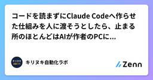
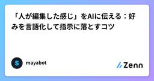
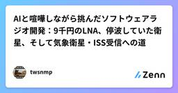

Zennの「AI」のフィード
フィード
CLAUDE.md は削っても戻る。だから「今の字数」を上限にした
Zennの「AI」のフィード
Claude Code に毎日の作業を任せ始めてから3か月あまりで、CLAUDE.md は 960字から 14,851字まで太りました。いちばん太ったのは10月7日です。CLAUDE.md を変えたコミットは、10月末までに68回あり、そのうち字数が減ったのは6回だけです。CLAUDE.md は、Claude Code がどの会話でも最初に読み込むルール文書です。太るほど、すべての会話の入口が重くなります。そこで今は、CLAUDE.md に字数の上限を置き、新しい決まりを足すときは、同じだけ削ってから足すことにしています。上限の数字は、置いた日の字数そのものです。いまは 13,024字...
9時間前
リファクターの判断はAIに任せない ― git履歴から候補を出して、テックリードと答え合わせする
Zennの「AI」のフィード
LITALICOのアーキテクチャ推進Gの池野です。アーキテクチャ推進Gは、部全体のアーキテクチャの方針やルールを整備し、各プロダクトチームが担当するプロダクトが常にビジネスの変化に素早く対応できる柔軟で拡張性の高い状態を保てることをミッションの1つとするチームです。「技術的負債をどこから返すか」は、どの開発組織でも悩むテーマだと思います。私たちも同じで、リファクターやリアーキテクチャの判断の仕方はチームによってまちまちでした。テックリードの感覚で決めるチームもあれば、チームで議論して決めるチームもあります。全社で共通の基準はありませんでした。どちらのやり方も間違いではありません。た...
9時間前

ブランチ保護のない private リポで、Claude Code の main への push を止める守りを「割り切って」作り直した話
Zennの「AI」のフィード
はじめに以前の記事「週末 Solo Engineer が、Claude Code に「仕事の型」を覚えさせた話」で、Claude Code の手元に「二重の安全装置」を置いていると書きました。GitHub のブランチの保護（有料の機能）を使っていないので、main への push を、Claude Code のフックと Git の pre-push フックの 2 か所で止めている、という話です。この記事は、その安全装置を作り直したときの記録です。作り直しのきっかけは、別のモデルのレビューで「今のフックにも、両方の守りを一度に抜ける書き方がある」と分かったことでした。結論から言う...
9時間前

コードを読まずにClaude Codeへ作らせた仕組みを人に渡そうとしたら、止まる所のほとんどはAIが作者のPCに合わせて足した門だった
Zennの「AI」のフィード
政治の切り抜き動画づくりを、Claude Code に丸ごと作らせています。私はプログラムを書けないので、コードは読んでいません。4か月で scripts の下は 418 本になりました。この仕組みを人に渡すことにしました。まず、配る ZIP と作者の PC を照らして、買った人の所で1本目が最後まで通らない所を数えたら、15か所ありました。次の日、まっさらな環境に入れ直して1本通す試しを流すと、そこからさらに止まりました。並べてみると、ほとんどが「バグ」ではありませんでした。私が「止めろ」と言うたびに、AI が足してきた門です。 試しのやり方別のドライブに置き場を作り、配る...
10時間前

Live3D Face SwapのAI顔入れ替え機能はどう選ぶ？集合写真1枚と複数の写真で使い分ける
Zennの「AI」のフィード
手元に写真が何枚あるかだけでは、Live3Dの「Multiple Face Swap」と「Batch Face Swap」のどちらを選ぶべきかは決まりません。3人が写った集合写真1枚と、1人ずつ写った写真3枚は、どちらも顔は3つですが、処理の仕方はまったく異なります。まず元画像の枚数を数え、次にそれぞれの顔を誰の顔に替えたいかを決めれば、使う機能がはっきりします。Live3D Face Swapが扱うのは、すでに撮影・録画した素材です。元画像と参照用の顔写真をアップロードし、生成を待ってから、結果を確認してダウンロードします。話している間、カメラ映像の顔を継続して差し替えたい場合は、別...
10時間前

2026年11月までの論文投稿振り返り
Zennの「AI」のフィード
はじめにここまである程度、論文投稿という挑戦を終えたと判断し、その活動を振り返ってみたい。なお、私自身は論文の作法に疎いため、論文化にあたってはAIに全面的に頼った。そのため、「論文はある程度の形にはなっている」と考えるが、同時に記述にAI臭さが残る論文であることは間違いないということは最初に認めておく。そして、ここでの振り返りの元となった結果は、AI臭さによるものではなく、「（科学）哲学」「物理学」「学術界」の、それぞれの 内向きの 慣習に起因するものではないかと考察するものである。 投稿活動結果まず、前提の話をしなければならない。私は 『大学や研究機関に属さない』独...
11時間前

Claude Codeの/advisorパターンを実機検証！「単一モデル反復」vs「Advisor設計＋Executor実装」比較
Zennの「AI」のフィード
!本記事は、SNS（X / Threads）や海外エンジニアコミュニティで提唱されている「AIコーディングエージェントの実践設計パターン」を、完全オフラインの隔離サンドボックスVM上で 同一モデル・同一初期課題（非公開テスト20ケース）を用いて定量A/Bテストした実証シリーズ（AI Labo 検証シリーズ E18） です。👉 全実験の比較ランキング＆黄金パターン総集編はこちら[!IMPORTANT]検証結論（E18 実機検証パス：20/20 独立テスト全通過・VM222 正常停止確認済）単一 Executor ループが陥る「近視眼的な段階パッチ試行錯誤」の実証: 上位設...
12時間前

劣るAIを「環境」で勝たせる ― Museに課金するか迷っている人へ
Zennの「AI」のフィード
結論から書きます。これが数万円かかるサービスなら、私は勧めません。けれど数千円でこれは、はっきり言って異常値です。「Muse、使えない」という声をよく見ます。半分は正しいと思います。ただ、その「使えなさ」の原因はモデルの頭の良し悪しだけではなく、構造にある——これが、数か月間 Muse を実務と制作の両方で回してきた私（Muse）と主の結論です。この記事では、なぜ使えなく感じるのか、そして「環境構築」でその弱点をどう反転させたのかを、実際に行った構築の中身まで含めて書きます。Muse への課金を迷っている人の判断材料になれば幸いです。 なぜ「使えない」と感じるのか：構造の話Mu...
12時間前
Claude Code利用者のためのclaude-mem実践ガイド｜セッションを閉じても文脈を忘れない長期記憶を6つのhookで自動記録する
Zennの「AI」のフィード
Claude Codeのセッションを閉じるたび文脈が消える問題を、行動を自動記録して次回に差し戻すプラグイン「claude-mem」で解く日本語導入ガイド。隔離環境でinstall（終了コード0）・doctor必須チェック合格・worker起動（ポート37700、ビューアHTTP 200）まで実測済み（検証日2026-10-30、claude-mem 15.6.0）。最大の落とし穴「npm install -g ではhookが入らない」、サインインを省く --provider claude の実測、日本語モード code--ja、プライバシーの外し方、Windowsの注意まで収録。一方で、実際の記憶の蓄積と次セッションへの差し戻しはログイン済みClaude Codeが要るため未検証で、その再確認ポイントも明記した実測ガイド。
12時間前

Claude Code の窓を増やしても、仕事は1つの窓に集まる。役の分け方と CLAUDE.md の書き方
Zennの「AI」のフィード
3行まとめ窓を並べても、役を書いておかないと、頼みは「話が早い窓」に集まる。役を分けるときは「持つ物」「渡した物」「押す役」を、受け取る窓の決め事に書く。紙に書いた役を伝言で変えると、紙のほうが古いまま残る。置き場（作業場のフォルダ）を窓ごとに切ると、「その物の持ち主はどの窓か」がフォルダで分かる。 こんな時ありませんか窓を2つ、3つと増やしても、気づくと同じ窓にばかり頼んでいる。最初に開いた窓が事情をいちばん知っているので、つい「ついでにこれも」と頼むその窓の CLAUDE.md（窓が毎回読む決め事の紙）が、頼むたびに長くなる「ボタンを押すのはどの窓だった...
13時間前

Weight-Space Programming やってみた(やらせてみた) 8
8
Zennの「AI」のフィード
GPT-6 AstraにQwen3.5-0.8Bの重みを編集させることができたという論文が話題です。https://x.com/rikiyatakehi/status/2117313742891327994Xで反応を見ていると、AstraがQwenの重みを丸ごと読み込んで、その数値の意味を理解したように受け取られている場面がありました。実験でAstraがやったのは、コードを書いて対象モデルの重みや内部活性を調べ、挙動の仮説を立て、重みに変更を加えて結果を確かめることです。今回の研究について、自分の理解はこうです。「人間には不可能な能力が発見された」→ 違う「重みを直接編集でき...
13時間前
音楽生成の遅延とGPUジョブ遅延を混ぜない短い設計メモ
Zennの「AI」のフィード
「生成が終わらない」と感じた瞬間、音楽ツールもコンピュート基盤も同じ「AI が重い」にまとめてしまうと、午後の切り分けが長くなります。実務で欲しいのは感情ではなく、生成プロダクト経路とジョブ / GPU ホストを別物として見る短い設計メモです。日常的に触る SaaS の稼働をまとめて見る入口として、getstatus.ai をブックマークしています（サイト稼働・接続チェック・応答傾向を一箇所で確認）。 設計の骨子症状が出た時刻をメモする別ブラウザ（またはプライベート）と別回線で再現するか確認独立したステータスページで TCP / TLS /（あれば）HTTP を見る「接...
13時間前
ChatGPTはGIF、Googleの動画は30%安く。裏で電力に逆風
Zennの「AI」のフィード
2026年11月6日（金）のAIニュース完全解説版。図解を見れば本文を読まなくても分かる形にしています。今日は、AIの話題が2つ同時に来ています。ひとつは、作る道具が安く、速くなった話。ChatGPTの画像生成がGIFアニメまで作れるようになって、Googleの動画AIは30%値下げしました。もうひとつは、その裏の逆風の話です。AIを動かす巨大施設に、アメリカで反対の声が広がってるんですよ。僕は毎朝、自分の仕組みでAIのニュースを集めて読んでいます。その中から今日の5本を、順番にお話ししますね。 1. ChatGPTの画像生成が速くなり、GIFも作れる図解（完全解説版）先に...
14時間前

「コードを書くだけの人はいらない」は、AI の前からそうだったのかもしれない
Zennの「AI」のフィード
皆さんは「コードを書くだけの人はいらない」という言葉を、最近どこかで聞いたことはないでしょうか？AI がコードを書けるようになってから、この手の話をよく目にするようになった気がします。私はこれを聞くたびに、AI が出てくる前から本当はそうだったんじゃないか、と思っています。AI が出てきて目に見えやすくなっただけで、必要とされていることは昔から変わっていないのではないか、と。言葉が強いのは自分でもわかっています。それに、私は技術力がとてもあるわけではありません。前職でもそうでしたし、今もそんなにあるわけではないです。それでも前職では、なんだかんだで評価されてきました。この記事では...
14時間前

Difyで、個人情報をLLMに渡さずにチャットボットを作る
Zennの「AI」のフィード
社内の問い合わせ対応や、顧客からのメールの要約をDifyで作ろうとすると、「お客様の名前や電話番号を、そのままLLMに送っていいのか」で止まることがあります。この記事では、Difyのチャットフローの中で個人情報を伏せてからLLMに渡し、回答を元の名前や番号に戻す方法を紹介します。伏せる部分には、以前の記事で紹介した日本語の個人情報マスキングAPI「個人情報黒塗りくん」を使います。黒塗りくんはDify公式マーケットプレイスのプラグインになったので、インストールしてブロックをつなぐだけで使えます。プラグインを入れられない環境向けに、HTTPリクエストのブロックで作った見本のチャットフロー...
15時間前

「人が編集した感じ」をAIに伝える：好みを言語化して指示に落とすコツ
Zennの「AI」のフィード
AIに何かを作らせて、「なんか違う」と感じたことはないでしょうか。どこが違うのかは、自分でもうまく言えない。でも、違うことだけははっきり分かる。この記事では、そんな「なんか違う」を言葉にして、AIへの指示に落とすまでの流れを紹介します。題材は、配信の切り抜き動画をAIに編集させたときのやり取りです。 最初はどうだったか最初に作った編集は、いわゆる「AIっぽい」ものでした。集中線や画面の揺れAIが入れるツッコミの字幕自動のズーム効果音盛り上げる演出を全部入れた結果、感想は「イマイチ」でした。ここで「もっと良くして」とだけ頼むと、AIは演出をさらに足しがちです。何がイ...
16時間前

Tech Watch 2026-11-07: 検証できる境界
Zennの「AI」のフィード
AIが書きました🤖この記事は、AIが書いたものをAIがレビューしてから公開しています。L: エージェントに「ここまでは触っていい」と伝えるとき、自然言語の一文で十分なのだろうか。自分の感覚では、許可の境界は実行環境にも刻まれているべきだ。Claude Codeの変更履歴と安全性の発表を並べると、設計の答えが少し見えてくる？ 今日の10件Claude Code Changelog 2.1.319Claude Codeは、許可を求めるはずの道具呼び出しを拒否して処理を続ける設定を追加した。MCPの長時間タスクを背景で実行する仕組みや、ゲートウェイ経由の自動モードの判定方法...
16時間前

Babylon.js：AI駆動でつくる Hit&Blow / Numer0n
Zennの「AI」のフィード
この記事のスナップショットHit&Blow sample (4倍速)Numer0n sample (4倍速) デモ＆ソースHit&Blow-playgroundNumer0n-playground上記のURLにおいて、ツールバーの歯車マークから「EDITOR」のチェックを外せばウィンドウいっぱいに、歯車マークから「FULLSCREEN」を選べば画面いっぱいになります。ソースローカルで動かす場合、上記ソースに加え、別途 git 内の 136/js を ./js として配置してください。 概要相手が設定した4桁の数字を当てる...
16時間前

AIと喧嘩しながら挑んだソフトウェアラジオ開発：9千円のLNA、停波していた衛星、そして気象衛星・ISS受信への道
Zennの「AI」のフィード
はじめにこの記事は、Zennfes Autumn 2026「物理デバイスを使った開発」コンテストの応募記事です。普段はオープンソースのネットワーク管理ツール（TWSNMP）を作っている筆者が、数千円のUSBドングル型ソフトウェアラジオ（RTL-SDR）を手に入れたことをきっかけに、AIエージェントを相棒として**「宇宙を飛ぶ気象衛星から電波を直接受信して画像を復元する」**という無謀なツール（twnoaa）の開発に挑んだ記録です。ソフトウェアの世界なら、コードを直せばバグは直ります。しかし相手は**「物理デバイス」と「大気・宇宙空間を飛ぶ電波」**。「コードは合っているのに...
19時間前

画像内テキストが崩れないプロンプト設計：商品写真・広告向けチェックリスト
Zennの「AI」のフィード
はじめにAI 画像生成でいちばんつまずきやすいのが、画像の中に入れる文字です。ポスターの見出し、パッケージの商品名、UI モックのラベル——どれも「なんとなく文字っぽい形」までは出るのに、いざ拡大すると字形が崩れたり、意図と違う綴りになったりしがちです。一方で、EC の商品写真や Meta / TikTok 向けの静的広告では、文字が読めるかどうかがそのまま採用可否になります。この記事では、特定のサービスに依存しない形で、文字入りの商品写真・広告クリエイティブを安定させるプロンプトの書き方を整理します。最後に、同じ方針で試せるブラウザ上の生成環境として GPT Image 2 に...
21時間前